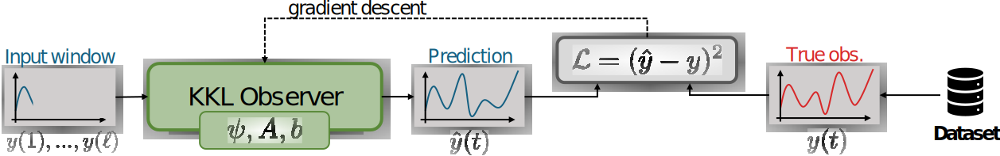
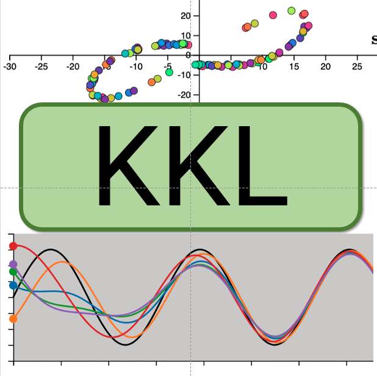
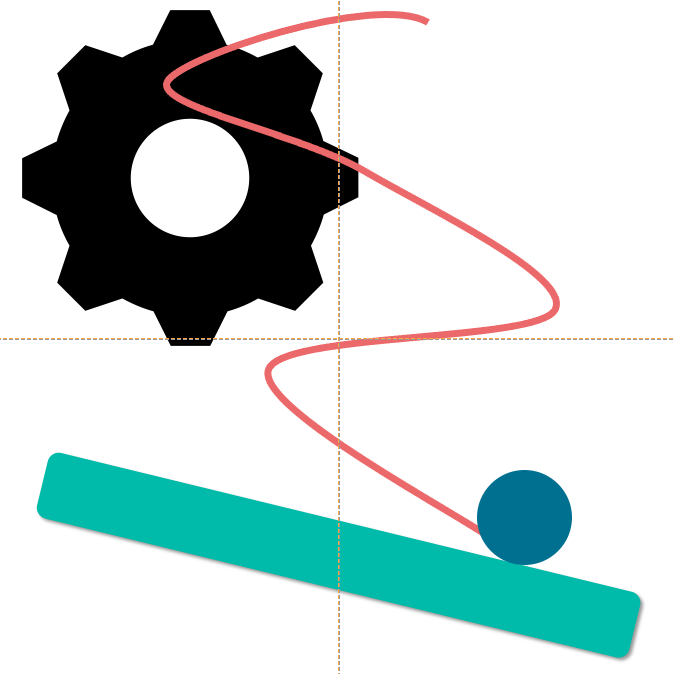
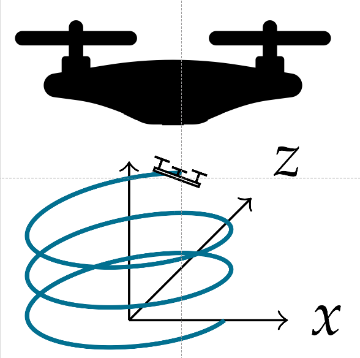

| NADRI | Madiha | (Lagepp, Univ. Lyon 1) |
| WOLF | Christian | (NaverLabs Europe) |
| DIGNE | Julie | (CNRS, Liris, INSA Lyon) |
| Steeven Janny | Identification and Simulation of Physical Systems | January 16th, 2024 |
Modeling and Simulation of Physical Systems
Three use cases for ML & Physics
|
|
|
|
Eckert et al. (2019). ScalarFlow: a large-scale volumetric data set of real-world scalar transport flows for computer animation and machine learning. TOG |
Allen et al. (2019), Physical design using differentiable learned simulators. arXiv preprint. |
Boston Dynamics |
| ML → Automatic identification through data collection | ML → Accelerate trials with faster simulations | ML → Faster simulation to achieve real-time planning, and automatic identification of the environment. |
Modeling and Simulation of Physical Systems
How ?
- From Physics and First Principles
- From Data and Machine Learning
| Initial Condition | → |
Dynamics
$$\frac{\partial \mathbf{s}}{\partial t} = {\color{#277C9D}
f}(\mathbf{s})$$
+
Numerical solver |
→ | Trajectory |
Modeling and Simulation of Physical Systems
How ?
- From Physics and First Principles
- From Data and Machine Learning
| Initial Condition | → |
Dynamics
$$\frac{\partial \mathbf{s}}{\partial t} = {\color{#277C9D}
f}(\mathbf{s})$$
+
Numerical solver |
→ | Trajectory |
Modeling and Simulation of Physical Systems
How ?
- From Physics and First Principles
- Fiability
physics laws are thoroughly validated, well known, and generalizable
- Explicability
models are easier to understand, at least at a high level of abstraction
- Difficulty
building a model from first principle is hard, not always possible.
- Slow
in general case, simulation is computationnally intensive
- From Data and Machine Learning
- Easier
we let the neural network and the optimization extract patterns from the data
- Faster
once trained, they are faster than most simulation algorithms
- Generalizability
no guarantee that the model will generalize outside training domain
- Reliability
no guarantee of robustness to noise and/or stability
Then, why not do both ?
Hybrid simulation with Physics + Machine Learning
Modeling and Simulation of Physical Systems
SOTA on Physics + Deep Learning
- When the Dynamics is known:
|
$$\dot{\mathbf{s}} = {\color{#277C9D} f}(\mathbf{s})$$
|
+ |
Solver
|
= | PINNs |
- Raissi et al. (2019). PINNs: A DL framework for solving forward and inverse problems involving nonlinear PDEs. JCP
- When the Solver is known:
| Physics from learning |
$$\dot{\mathbf{s}} = {\color{#277C9D} f}(\mathbf{s})$$
|
+ |
Solver
|
= | Neural-ODE |
| Learning residual |
|
Aphinity | |||
| Inductive biases |
$$\dot{\mathbf{s}} = {\color{#277C9D} f}(\mathbf{s})$$
|
Deep SSM |
- Chen et al. (2018). Neural ordinary differential equations. NeurIPS
- Yin et al. (2021). Augmenting physical models with deep networks for complex dynamics forecasting. JSM
- Gedon et al. (2021). Deep state space models for nonlinear system identification. IFAC
- When everything needs to be learned:
| End-to-end |
$\dot{\mathbf{s}} = {\color{#277C9D} f}(\mathbf{s})$
+
Solver
|
= |
- Guen et al. (2020). Disentangling physical dynamics from unknown factors for unsupervised video prediction. CVPR
- Pfaff et al. (2020). Learning Mesh-Based Simulation with Graph Networks. ICLR
Agenda
 |

  |
Deep KKL: Data-driven Output Prediction for Non-Linear Systems
The Output Prediction task
An output predictor is defined as a couple $G, \psi$ such as:
- $\dot{z} = G(z, y)$ is a uniform exponential contraction,
- the couple $(g, \psi)$ with $g(z)= G(z, \psi(z))$ is a generating model.
- Motivations
- Dynamics ${\color{#277C9D} f}$ is unknown...
- ... and probably difficult to compute.
- Measurement of state $\mathbf{s}$ is hard...
- ... while collecting a dataset of $y$ is easy
Deep KKL: Data-driven Output Prediction for Non-Linear Systems
From Non-Linear to Linear
For all non-linear system $\dot{\mathbf{s}} = {\color{#277C9D} f}(\mathbf{s})$, there exists an infinite dimensional linear operator $\mathcal{K}$ such that $\mathcal{K} \mathbf{h}(\mathbf{s}) = \mathbf{h}({\color{#277C9D} f}(\mathbf{s}))$.
For any non-linear system $\dot{\mathbf{s}} = {\color{#277C9D} f}(\mathbf{s})$ and for any paire $A, b$, there exists an injective mapping $T$ such that $\dot{\mathbf{z}} = A \mathbf{z} + by$ and $\mathbf{y} = \mathbf{h}\Big(T^{-1}(y)\Big)$ where $\mathbf{z}$ is of finite dimension.
Deep KKL: Data-driven Output Prediction for Non-Linear Systems
KKL Observer
- Parameters to identify:
$A$ Hurwitz
$A,b$ controllable
Lipschitz
aaa
With $\dim \mathbf{z} = 2\dim \mathbf{s}+2$, there exists a Hurwitz matrix $A$ and a function $\psi$ such that the KKL observer is an output observer.
|
Good luck. |
|
- Bernard et al.(2022). KKL observer design for sensorless induction motors. Conference on Decision and Control. - Brivadis et al (2019). Luenberger observers for discrete-time nonlinear systems. Conference on Decision and Control. |
|
|
Model $\psi$ with an MLP, Learn $A,b$ via gradient descent. |
Deep KKL: Data-driven Output Prediction for Non-Linear Systems
Model overview
Assume that $\psi$ is lipschitz continuous, then for all trajectory $y$ known in the time interval $[0, \ell]$, the prediction $\hat{y}$ at the prediction horizon $p>0$ is given as: $$ | \hat{y}(\ell+p) - y(\ell+p) | \leq k_1 e^{-\lambda\ell + k_2p} |z_0| $$
Deep KKL: Data-driven Output Prediction for Non-Linear Systems
Comparison with Recurrent Neural Networks
Deep KKL
$$\begin{array}{cl} \dot{\mathbf{z}} &= A \mathbf{z} + by \\ y &= \psi(\mathbf{z}) \end{array}$$
| Proof of existence | |
| Contraction |
RNN
$$\begin{array}{cl} \dot{\mathbf{z}} &= \text{tanh}(A \mathbf{z} + by) \\ y &= \psi(\mathbf{z}) \end{array}$$
GRU
$$\begin{array}{cl} \mathbf{r} &= \sigma(W_r \mathbf{z} + U_r y + \mathbf{b}_r) \\ \mathbf{x} &= \sigma(W_x \mathbf{z} + U_x y + \mathbf{b}_x) \\ \mathbf{n} &= \text{tanh}\big(W_n \mathbf{z} + r * (U_n y + \mathbf{b}_n)\big) \\ \dot{\mathbf{z}} &= (1 - \mathbf{x}) * \mathbf{z} + \mathbf{x} * \mathbf{n} \\ \end{array}$$
Deep KKL: Data-driven Output Prediction for Non-Linear Systems
Take home messages
Pros
- A powerful inductive bias
- A step toward theory on RNNs
Cons
- Do not replace all your RNNs !
- Extrapolation to larger system not trivial
Follow-up work
- Peralez et al. (2021). Deep learning-based luenberger observer design for discrete-time nonlinear systems. CDC.
- Buisson-Fenet et al. (2023). Towards gain tuning for numerical kkl observers. IFAC.
- Miao et al. (2023). Learning Robust State Observers using Neural ODEs. Learning for Dynamics and Control Conference.
Agenda
|
|
|
Large-scale Learning of Turbulent Fluid Dynamics with Mesh Transformers
How do we address larger-scale problems?
An infamous example: Simulation of Fluid Mechanics
|
The Navier-Stokes equations:
$$\begin{array}{cl}
\dot{\mathbf{u}} + (\mathbf{u}\cdot \nabla) \mathbf{u} &= -\nabla p + \nu \Delta
\mathbf{u} + \mathbf{f} \\
\nabla \cdot \mathbf{u} &= 0 \\
\end{array}$$
|
- No known general solution (1M$ cash-prize)
- Direct simulation is extremely difficult
- Multi-scale dynamics
- Gingold et al. (1977). Smoothed particle hydrodynamics: theory and application to non-spherical stars. Royal Astronomical Society.
Smoothed Particles Hydrodynamics
Lagrangian approach of fluids : simulate particles interactions.
- Real-time, good-looking
- # of particles, physical accuracy
Stable Fluid Simulation
Lagrangian/Eulerian approach of fluid: fixed cell and study I/O
- Fast, and plausible
- Physical accuracy (for CG only)
- Stam, J. (1999). Stable Fluids.
Large-scale Learning of Turbulent Fluid Dynamics with Mesh Transformers
Engineer-grade simulations
RANS Simulations
- Standard in engineering, works with irregular meshes
- Computation time is controlled (depending on the mesh resolution)
- Accuracy is handled via the turbulence model
- Versteeg et al. (2007). An introduction to computational fluid dynamics: the finite volume method. Pearson education.
Large-scale Learning of Turbulent Fluid Dynamics with Mesh Transformers
Public Datasets for Learning Fluid Dynamics
[1] Pfaff et al. (2020). Learning Mesh-Based Simulation with Graph Networks. ICLR
[2] Han et al. (2021). Predicting Physics in Mesh-reduced Space with Temporal Attention. ICLR
[3] Eckert et al. (2019). A large-scale volumetric data set of real-world scalar transport flows for computer animation and ML. TOG.
[4] Kanov et al. (2015). The JHTB: An open simulation laboratory for turbulence research. Computing in Science & Engineering
Large-scale Learning of Turbulent Fluid Dynamics with Mesh Transformers
EAGLE Dataset
- Shi et al. (2019). Neural lander: Stable drone landing control using learned dynamics. ICRA
Large-scale Learning of Turbulent Fluid Dynamics with Mesh Transformers
EAGLE Dataset
Step
Triangular
Splines
- 1,200 different simulations
- Irregular mesh / Dynamic
- Accurate turbulence model
- 2 months of simulation on 8x A100 GPUs
- $\sim$4TB of raw mesh data to post-process
Simulations realized by Aurélien Bénéteau during is Master internship with us.
Large-scale Learning of Turbulent Fluid Dynamics with Mesh Transformers
Deep Learning for Fluid Mechanics
|
Convolutional Neural Networks - Stachenfeld et al. (2021). Learned simulators for turbulence. ICLR |
|
|
High resolution sim. on irregular mesh |
Mesh → Grid → Mesh |
Large-scale Learning of Turbulent Fluid Dynamics with Mesh Transformers
Receptive field of Graph Neural Networks
|
Graph Neural Networks - Pfaff et al. (2020). Learning Mesh-Based Simulation with Graph Networks. ICLR |
Large-scale Learning of Turbulent Fluid Dynamics with Mesh Transformers
Mesh Transformer
Large-scale Learning of Turbulent Fluid Dynamics with Mesh Transformers
Comparison with State-of-the-Art
- More accurate forecasting
- Faster inference
- Stachenfeld et al. (2021). Learned simulators for turbulence. ICLR
- Pfaff et al. (2020). Learning Mesh-Based Simulation with Graph Networks. ICLR
Large-scale Learning of Turbulent Fluid Dynamics with Mesh Transformers
Attention maps
Large-scale Learning of Turbulent Fluid Dynamics with Mesh Transformers
Take home messages
Pros
- Large-scale dataset for CFD
- Mesh Transformer is SOTA on CFD tasks
Cons
- Limited to 2D simulations
- Going further with inductive bias
Follow-up work
- Li et al. (2023). Latent Neural PDE Solver for Time-dependent Systems. NeurIPS AI for Science Workshop.
- Luo et al. (2023). CARE: Modeling Interacting Dynamics Under Temporal Environmental Variation. NeurIPS
- Hao et al. (2023). Forecast. 3D unsteady multiphase flow fields in the coal-supercritical water fluidized bed reactor via GNN. Energy.
30 seconds break
Do not worry, the ferret is doing the "happy" dance...
Agenda
|
|
|
Filtered-CoPhy: Unsupervised Learning of Counterfactual Physics in Pixel Space
Ladder of Causation
- Level 1 : Association $$P(y | x)$$
- Lerer et al. (2016). Learning physical intuition of block towers by example. ICML
- Level 2 : Intervention $$ P(y | do(x), z) $$

- Bakhtin et al (2019). Phyre: A new benchmark for physical reasoning. NeurIPS
- Level 3 : Counterfactuals $$ P(y_x | x', y')$$
- Judea Pearl. Causal and counterfactual inference. The Handbook of Rationality.
Filtered-CoPhy: Unsupervised Learning of Counterfactual Physics in Pixel Space
Counterfactual reasoning in Physics
- Unknown confounders
- Unkown GT positions
- Collisions
- Reason in pixel space
Filtered-CoPhy: Unsupervised Learning of Counterfactual Physics in Pixel Space
Filtered-CoPhy Benchmark

A
B
C
D
A
B
C
D

A
B

C
D
Filtered-CoPhy: Unsupervised Learning of Counterfactual Physics in Pixel Space
Model Overview
Counterfactual Dynamics module
Filtered-CoPhy: Unsupervised Learning of Counterfactual Physics in Pixel Space
Encoder / Decoder with Transporter Network
4 keypoints
8 keypoints
16 keypoints
- Temporal consistency
- Disentengling Features / Keypoints
- Kulkarni et al. (2019). Unsupervised learning of object keypoints for perception and control. NeurIPS
Filtered-CoPhy: Unsupervised Learning of Counterfactual Physics in Pixel Space
Encoder / Decoder with Keypoints & Coefficient
- Discover keypoints and coefficients
- Learn to disentangle shape and position
Filtered-CoPhy: Unsupervised Learning of Counterfactual Physics in Pixel Space
Results
Results on Filtered-Cophy


Results on real videos

- Lerer et al. (2016). Learning physical intuition of block towers by example. ICML
- Guen et al. (2020). Disentangling physical dynamics from unknown factors for unsupervised video prediction. CVPR
- Li et al. (2020). Causal discovery in physical systems from videos. NeurIPS
Filtered-CoPhy: Unsupervised Learning of Counterfactual Physics in Pixel Space
Take home messages
Pros
- Dataset for causal discovery in physics
- Explainability via keypoints
Cons
- Apparent simplicity / True challenge
- Room for improvements
Follow-up work
- Yang et al. (2022). Learning physics constrained dynamics using autoencoders. NeurIPS
- Zhao et al. (2023). Generative Causal Interpretation Model for Spatio-Temporal Representation Learning. SIGKDD
Conclusion and perspectives
Where are we, and where are we going ?
Conclusion and perspectives
Where are we, and where are we going ?
What is the need ? |
What we did ? |
What next ? |
|
More Datasets |
Causal reasoning |
Electro-magnetism ? |
|
Fluid Mechanics |
Real-world dataset |
||
More models |
Keypoint detector |
Mesh-based simulation ? |
|
Continuous simulator |
Pixel Space ? |
||
Mesh-Transformer |
|||
Hybrid |
 | Deep KKL |
Controller design ? |
|  | Contractive control |
Robust forecasting ? |
|
|  | Canonical SSM |
||
- Long-term objectives
- Applications of neural simulators
- Controllers for robotics
Thank you for your attention !
Collaborators:
 |
 |
|||
| Madiha Nadri | Christian Wolf | Julie Digne | Fabien Baradel | Natalia Neverova |
 |
 |
 |
||
| Greg Mori | Vincent Andrieu | Nicolas Thome | Aurélien Bénéteau | Mattia Giaccagli |
 |
 |
|||
| Samuele Zoboli | Quentin Possamaï | Laurent Bako | Mathieu Marchand | Daniele Astolfi |
Publication List
- Publications covered today:
|
CDC, 2021 |
|
ICLR, 2022 (poster) |
|
ICLR, 2021 (oral) |
- Others publications:
|
CDC, 2022 |
|
IFAC, 2022 |
|
IFAC, 2022 |
|
ICLR, 2024 |